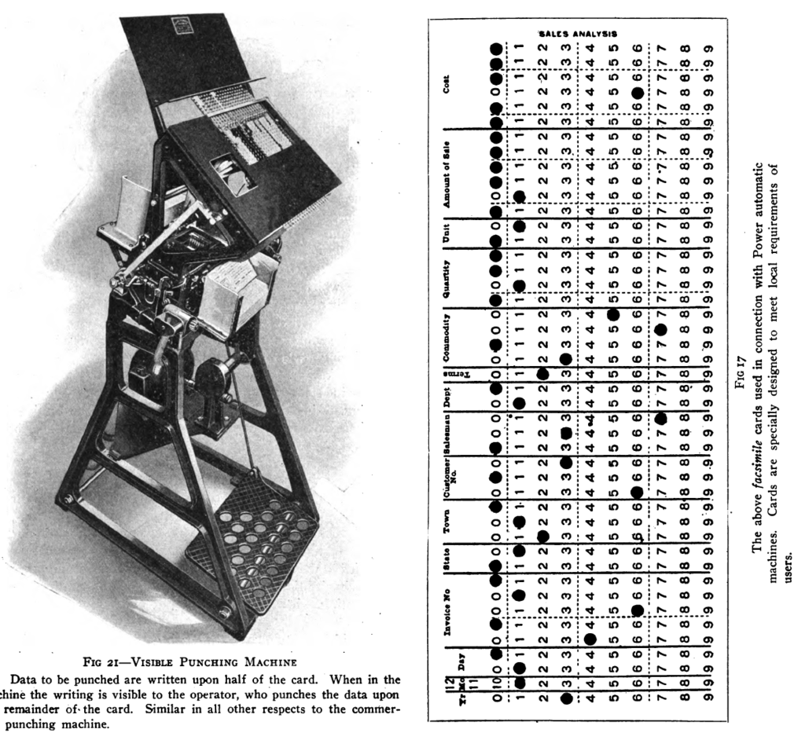
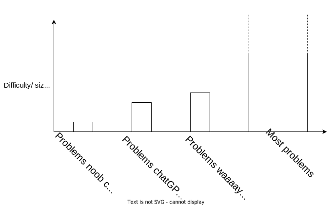

Links
To navigate this slide deck: Use cursor keys or click on arrows on bottom right. Use Esc key to toggle overviewLearning to code in the age of AI
Hi, I'm Sheena
|
 🧗♀️🏕️🧭🇿🇦🖊️🛠️🔥
🧗♀️🏕️🧭🇿🇦🖊️🛠️🔥
|
Umuzi's Purpose
Reduce social inequality through education
Figure out what skills are future-proof
AI is making waves
- I personally use LLMs while coding
- LLMs can be very useful in education
- The biggest foot-gun around for software dev learners
What is software development?
A software developer's job is to...
Write lines of code?
A software developer's job is to...
Solve problems!
Using codeA software developer's job is to...
Figure out what the problem even is
Like this?

We start with a problem or idea...
Full of assumptions about...
- the world
- what is possible with current technology
- shared understanding
Communicated imprecisely...

Pictures, flow charts, research artifacts, conversations, wire-frames, documentation, text...
The most precise way to describe how an application works is...
code
Like this?
Translate the specification into code
The process
- Follow up questions
- Push-back
- Tradeoffs
- Suggestions
- Inspiration
- Empathy for the user
- Solution architecture
- Selecting the right tools
- Validation of solution
Like this
 Collaborative, exploratory process
Collaborative, exploratory process
Watch this...later
Dave Farley - Developer Jobs AREN'T What You Think They Are
Evolution of code...
Punch cards
Time passes... abstraction happens
What is abstraction?

C and C++ era languages

Python era languages
How might the language change?
Human languages
Inaccurate! Imprecise! Confusing!Punctuation
"The koala eats shoots and leaves"
"The koala eats, shoots and leaves"
"She ran away from the fire, in her pajamas"
"She ran away from the fire in her pajamas"
US CONSTITUTION, ARTICLE IV, SECTION 3
Revisionist history;
Common mistakes
"There, their"
"Too, to, two"
"It's, its"
Misuses
"Borrow versus lend"
"Literally == figuratively"
Staying hip with the times
Lit
Kiff
Drip
Cool
Cheddar
Goat
DRY
Lol
🔨 Hammers and laser-beams 💥
- Human languages are like hammers
- Programming languages like Python - more like a laser beam
- C is still a thing
- Even assembler
Code ==
Precise description of what machines should doCode up close
- What order things happen in
- Under what circumstances
- Where knowledge comes from, where it goes
- How things change
- When things repeat
Code up close
- Logic and algorithms
- Written in a way that is clear to machines
- Written in a way that is clear to people
What will get abstracted away?
- NOT if statements, loops, flow control
- NOT functions
- NOT variables
- NOT classes and objects
- NOT exceptions and errors
What will get abstracted away?
- NOT our ability to think
- NOT our ability to express ourselves
AI is a foot gun
For people learning to code
Confusing things
New devs practice their skills
Hackerrank, leetcode etc
But LLMs do it better, so what's the point of getting a human to do it?
Rather: let the humans practice using LLMs, that's the future proof skill!
Problems
But wont AI get better?
YES!
LLMs will be able to do "harder" things in future
Token limits will increase
Should humans even try to outpace LLMs?
Will software devs become redundant?
Definitely not!
When learning any language we...
Start off by translating words and simple sentences
But we know the end goal is something more
When learning software dev
Start off by translating simple problems into code
Software development is...
NOT A TRANSLATION SERVICE
- A collaborative, iterative, exploratory process
- Code is an artifact output from that process
First step in learning this is: Translation and literacy
To become a software developer, start with
Literacy!
Learn to write: translate simple ideas into code
Then...
Learn to apply that literacy to solve problems
Hackerrank etc
- Practice literacy
- Practice applying skills to solve basic problems
Body Builders


Software developers

Solve hard problems - we think and bring our thoughts to life
How do devs get good at solving hard problems?

Practice problem solving
Apply what you know, solve small problems
So that you can learn to solve bigger problems
Practice precision
Noob-friendly problems are simple. Maybe you can solve them with a hammer
But then you wont learn how to use laser beams
How?
by PRECISELY describing small, simple algorithms
you learn the skills to describe big, complicated ones
Remember
The most precise way to describe what a program should do is in code
Learn to code in order to
Learn to think
Express your thoughts precisely to...
- get feedback from people
- get feedback from the world
- get feedback from our future selves
- harden our own thinking
Reading... Japanese?

Reading code...
- To read the minds of your team mates
- To read the minds of powerful thinkers
Sam Altman
"You should learn to code...learning to code was great as a way to learn how to think. I think coding will still be important in the future"
Can AI help me learn software development?
YES!
Illusions of competence
Richard Feynman
"The first principle is that you must not fool yourself and you are the easiest person to fool."
Components of illusions of competence
- Dunning Kruger effect
- Overconfidence in future-self
- Hindsight bias
MASTERY
- Familiarity
- Nodding while someone/something else does the thinking
- Housed in your short-term memory
MASTERY comes from
- Deliberate practice
- Recall
- Struggle!
Strategy
- Try it yourself first - embrace struggle
- Opportunity to be wrong == Opportunity to upgrade yourself
- If you get stuck - get unstuck
- Recall things later on, practice over time
- Learn to teach (to learn) - protégé effect
The end
These slides - extra resources - links to my socials
Attributions
- https://en.wikipedia.org/wiki/Sam_Altman
- https://commons.wikimedia.org/wiki/File:Richard_Feynman_1988.png
- https://commons.wikimedia.org/wiki/Category:Punch_cards#/media/File:1915_NELA_Convention_report_on_punch_cards.png